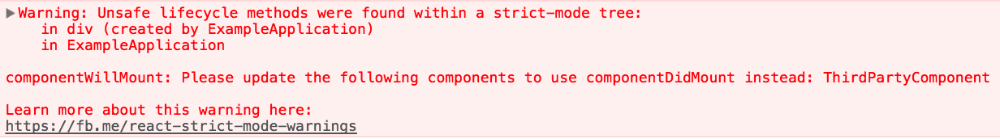

Строгий режим
StrictMode - инструмент для выделения потенциальных проблем в приложении. Как и Fragment, StrictMode не отображает какой-либо видимый UI. Он активирует дополнительные проверки и предупреждения для своих потомков.
Вы можете включить строгий режим для любой части вашего приложения. Например:
import React from 'react';
function ExampleApplication() {
return (
<div>
<Header />
<React.StrictMode>
<div>
<ComponentOne />
<ComponentTwo />
</div>
</React.StrictMode>
<Footer />
</div>
);
}
В приведенном выше примере проверки строгого режима не будут выполняться для компонентов Header и Footer. Однако эти проверки будут выполнены для компонентов ComponentOne и ComponentTwo, а также для всех их потомков.
На данный момент StrictMode помогает с:
Обнаружением компонентов, имеющих небезопасные методы жизненного цикла.
Предупреждением об использовании устаревшего строкового API для ref.
Обнаружением неожиданных сторонних эффектов.
Дополнительные функциональные возможности будут добавлены в будущих релизах React.
Обнаружение компонентов, имеющих небезопасные методы жизненного цикла
Некоторые устаревшие методы жизненного цикла небезопасны для использования в асинхронных React приложениях. Однако, если ваше приложение использует сторонние библиотеки, может оказаться сложным обеспечить, чтобы эти методы не использовались. К счастью, строгий режим может помочь с этим!
Когда строгий режим включен, React компилирует список всех компонентов-классов, использующих небезопасные методы жизненного цикла, и отображает предупреждающее сообщение с информацией об этих компонентах, например:
Теперь, решение проблем, выявленных в строгом режиме, облегчит использование вами всех преимуществ асинхронной отрисовки в будущих версиях React.
Предупреждение об использовании устаревшего строкового API для ref
Ранее React предоставлял два способа управления ссылками ref: устаревший строковый API и API обратного вызова. Хотя строковый API был более удобным, он имел ряд недостатков, поэтому наша официальная рекомендация заключалась в том, чтобы вместо него использовать форму обратного вызова.
React 16.3 добавил третий вариант, который предлагает удобство строки ref без каких-либо недостатков:
class MyComponent extends React.Component {
constructor(props) {
super(props);
this.inputRef = React.createRef();
}
render() {
return ;
}
componentDidMount() {
this.inputRef.current.focus();
}
}
Поскольку ссылки на объекты по большей части были добавлены в качестве замены строковых ref, строгий режим теперь предупреждает об использовании строковых ссылок.
Обнаружение неожиданных сторонних эффектов
Концептуально, React работает в две фазы:
Фаза отрисовки (render) определяет, какие изменения необходимо произвести. В данной фазе React вызывает render, а затем сравнивает результат с предыдущим результатом вызова render.
Фаза фиксации (commit) - в ней React применяет любые изменения. (В случае React DOM - это фаза, когда React вставляет, обновляет и удаляет узлы DOM.) В данной фазе React также вызывает методы жизненного цикла, такие как componentDidMount и componentDidUpdate.
К методам жизненного цикла фазы отрисовки относятся следующие методы компонента-класса:constructor, componentWillMount, componentWillReceiveProps, componentWillUpdate, getDerivedStateFromProps, shouldComponentUpdate, render, обновляющие функции метода setState (первый аргумент).
Поскольку вышеупомянутые методы могут быть вызваны более одного раза, важно, чтобы они не содержали каких-либо сторонних эффектов. Игнорирование этого правила может привести к множеству проблем, включая утечку памяти и нерелевантное состояние приложения. К сожалению, бывает довольно трудно обнаружить эти проблемы, поскольку они часто могут быть недетерминированными.
Строгий режим не может автоматически обнаруживать для вас побочные эффекты, но он может помочь вам определить их, сделав их немного более детерминированными. Это достигается путем преднамеренного двойного вызова следующих методов:Метод constructor компонента-класса. Метод render. обновляющие функции метода setState (первый аргумент), Статический метод getDerivedStateFromProps.
К примеру, рассмотрим следующий код:
class TopLevelRoute extends React.Component {
constructor(props) {
super(props);
SharedApplicationState.recordEvent('ExampleComponent');
}
}
На первый взгляд данный код может не показаться проблемным. Но если метод SharedApplicationState.recordEvent не является идемпотентным, то создание экземпляра этого компонента несколько раз может привести к недопустимому состоянию приложения. Такая тонкая ошибка может не проявляться во время разработки, или же она может возникать очень непоследовательно, и поэтому может быть упущена из виду.
Умышленно производя двойные вызовы методов, таких как конструктор компонента, строгий режим делает такие проблемные шаблоны более легкими для обнаружения.